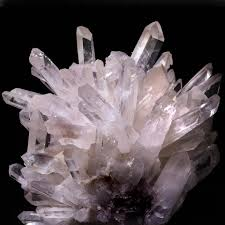
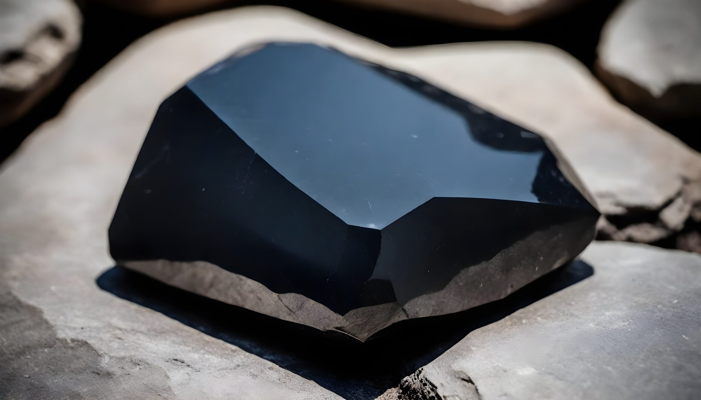
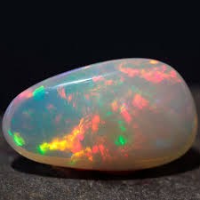
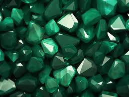
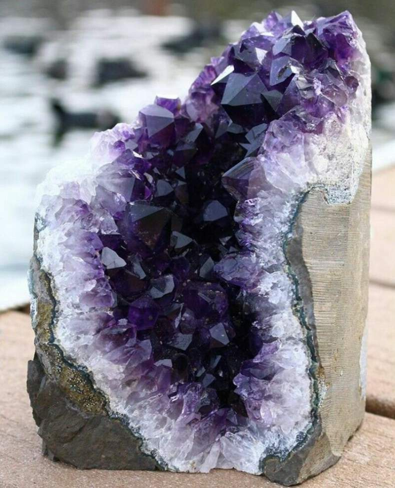
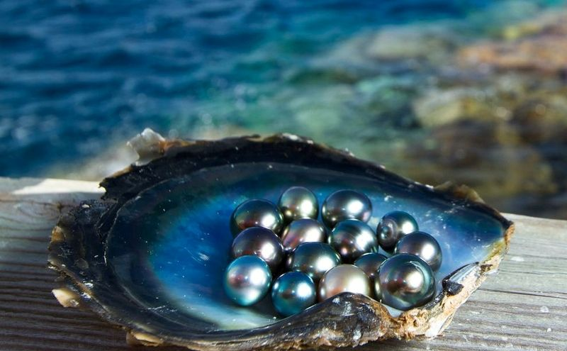
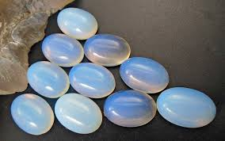
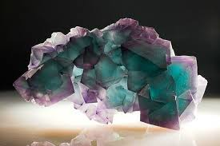
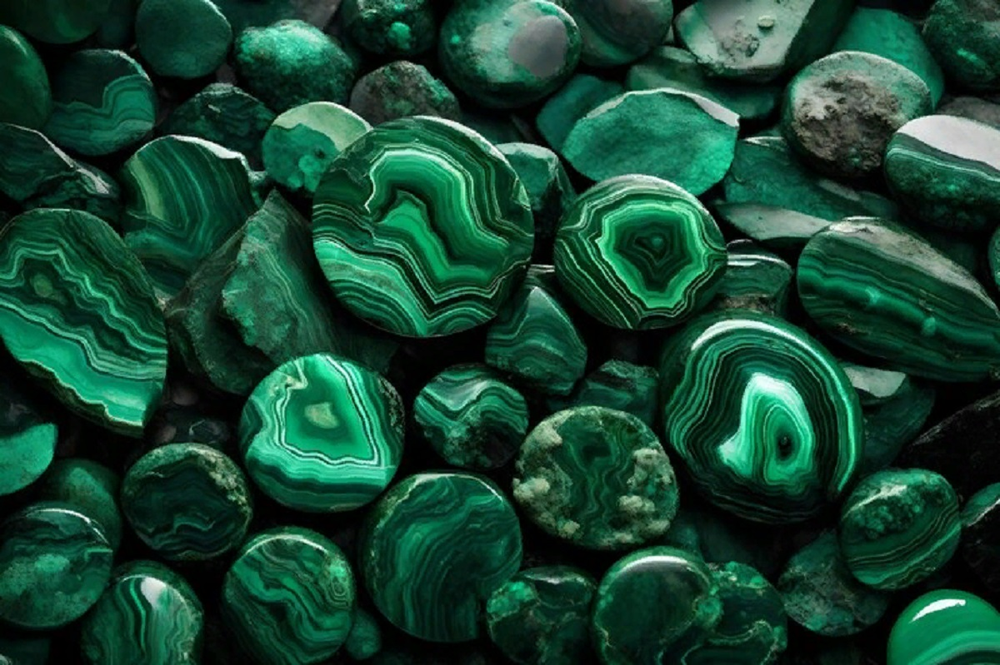

Кварц Прозрачный или полупрозрачный камень, который встречается в различных цветах, от чистого белого до розового или дымчатого, и широко используется в ювелирных украшениях и часах.

Обсидиан Вулканическое стекло, образующееся при быстром охлаждении лавы, отличается глубоким чёрным цветом и гладкой поверхностью.

Турмалин Уникальный минерал, который может быть представлен в широком спектре цветов, от розового до зелёного, с эффектом плеохроизма, когда камень меняет цвет под разными углами.

Опал Переливающийся камень, известный своей игрой цвета, которая возникает за счёт рассеивания света внутри микроструктуры камня.

Изумруд Драгоценный камень насыщенного зелёного цвета, который высоко ценится за свою редкость и символизирует мудрость и изобилие.

Аметист Фиолетовый камень, одна из форм кварца, известный как символ спокойствия и душевного равновесия.

Жемчуг Органический драгоценный камень, образующийся в раковинах моллюсков и отличающийся мягким блеском, символизирующим чистоту и совершенство.

Лунный камень Полевой шпат с нежным голубоватым или белым отливом, который создаёт эффект сияния, напоминающий свет луны.

Малахит Зелёный минерал с характерными полосатыми узорами, который символизирует трансформацию и используется в ювелирных изделиях и декоративных предметах.